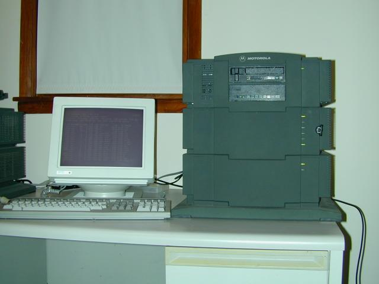

<!DOCTYPE HTML PUBLIC  "-//IETF//DTD HTML Strict//EN">
<html>
<head>
<title>OpenBSD/mvme88k</title>
<link rev=made href=mailto:www@openbsd.org>
<meta name="resource-type" content="document">
<meta name="description" content="Die OpenBSD/mvme88k Seite">
<meta name="keywords" content="openbsd,mvme88k">
<meta name="distribution" content="global">
<meta name="copyright" content="This document copyright 1996-2002 by OpenBSD.">
</head>

<BODY BGCOLOR="#FFFFFF" TEXT="#000000" LINK="#23238E">

<h2>OpenBSD/mvme88k</h2>
<a href="index.html"></a>

<hr>


<h3><font color=#0000e0><i>Inhaltsverzeichnis</i></font></h3>
<p>
<ul>
 <li><a href="#history">Geschichte des ports</a>
 <li><a href="#status">Momentaner Status</a>
 <li><a href="#howtoget">Wo man ihn herbekommt</a>
 <li><a href="#hardware">Liste der unterst&uuml;tzten Hardware</a>
 <li><a href="#pics">Mehr 88k Bilder</a>
 <li><a href="#projects">Projekt Liste</a>
 <li><a href="#m187dmesg">MVME187 dmesg</a>
 <li><a href="#m188dmesg">MVME188 dmesg</a>
 <li><a href="#m197dmesg">MVME197 dmesg</a>
</ul>
</p>

<hr>
<a name=history>
<h3><font color=#0000e0><strong>Geschichte:</strong></font></h3>

<p>
Dem Motorola 88k Prozessor wird nachgesagt, der beste RISC Prozessor zu sein,
der jemals erdacht wurde.
Seine kombinierte Einfachheit und Eleganz machen den mvme88k zu 
einer aufrichtigen, robusten Plattform.
</p>
<p>
Nivas Madhur hat den ersten mvme88k port 
f&uuml;r die MVME187 Karte angefangen, hat aber seitdem den Arbeitgegeber gewechselt.
Steve Murphree, Jr. hat den port dann im November 1998 komplettiert.  Der port hat seitdem 
einige grosse &Auml;nderungen erfahren, wie etwa ein erneuertes autoconf und onboard SCSI 
Treiber, stark erweiterte VME Bus Unterst&uuml;tzung, ein funktionierender Installationsprozess
das einen korrekten Motorola VID Block auf den Platten erzeugt, und mehr unterst&uuml;ltzte 
Boards.
</p>
<hr>
<a name=status>
<h3><font color=#0000e0><strong>Momentaner Status:</strong></font></h3>

<p>
Die Leute, die am OpenBSD/mvme88k port arbeiten sind zur Zeit:
Steve Murphree, Jr. und Miod Vallat.<br>  
Mehr w&auml;ren nett :)
</p>

<p>
Email kann an den Verantwortlichen des OpenBSD/mvme88k port geschickt werden: 
<a href="mailto:smurph@OpenBSD.org">smurph@OpenBSD.org</a>.  
</p>

<p>
Seit Version 2.4 gibt es einen snapshot. Der port unterst&uuml;tzt den MVME187 
Single Board Computer (SBC) genauso wie das MVME188 Multi-Prozessor Board.
(es wird aber zur Zeit nur 1 Prozessor benutzt) Unterst&uuml;tzung f&uuml;r das MVME197 ist geplant, 
aber dazu braucht es noch etwas Zeit. Die Installations-Tools und -Prozess 
der Version 2.5 funktionieren.  OpenBSD/mvme88k kann mit Hilfe von Kassetten
Ramdisk Images installiert oder upgegradet werden, aber auch mit Netzwerk und 'diskless'
Installationen.
</p>

<h3><font color=#0000e0><strong>Neu mit 2.8:</strong></font></h3>

<p>
<ul>
<li>Unterst&uuml;tzung f&uuml;r den MVME188 ist komplett.
<li>VME bus devices auto vector, was zu einer 'plug and play' &auml;hnlichen Umgebung f&uuml;hrt.
<li>OpenBSD/mvme88k benutzt jetzt das Unified Virtual Memory System. (UVM)
</ul>
</p>


<hr>
<a name=howtoget>
<h3><font color=#0000e0><strong>Wo man ihn herbekommt:</strong></font></h3>

<p>
<ul>
<li><a href=ftp.html>Snapshots werden von Zeit zu Zeit verf&uuml;gbar gemacht.</a>
<li><a href=ftp://ftp3.usa.openbsd.org/pub/OpenBSD/2.5/mvme88k/INSTALL.mvme88k>Installations Informationen f&uuml;r die 2.5 Version von OpenBSD/mvme88k</a>
</ul>
</p>

<p>
<hr>
<a name=hardware>
<h3><font color=#0000e0><strong>Liste der unterst&uuml;tzten Hardware:</strong></font></h3>

<h4>OpenBSD/mvme88k l&auml;uft auf folgenden Klassen von Maschinen:</h4>
<ul>
<li>MVME187: Motorola 88100 basierte Single Board Computer (SBC)
<li>MVME188: Motorola 88100 basierte VME Systeme<br>
Die MVME188 CPU Boards gibt es in verschiedene Sorten, die sich in der Anzahl der CPUs
(1, 2 oder 4) und zugeh&ouml;riger CMMUs unterscheiden. Alle existierenden Konfigurationen 
sollten unterst&uuml;tzt werden, getestet wurde aber nur auf einem 1P64 (1 CPU, 4 CMMU) und einem 
2P256 (2 CPU, 4 CMMU) Board.
<li>MVME197: Motorola 88110 basierende Single Board Computer (SBC)
Die MVME197 CPU Boards gibt es in verschiedenen Varianten, die sich durch die Anzahl der
Prozessoren (1 oder 2) und den optionalen externen Cache-Controller.
Alle existierenden Konfigurationen sollten unterst&uuml;tzt werden, aber getestet wurde nur auf
einem MVME197LE (kein externer Cache-Controller) Board.  Unterst&uuml;tzung f&uuml;r dieses Board ist
neu gibt noch einige 'Features' die ausgeb&uuml;gelt werden m&uuml;ssen.
</ul>

<h4>Unterst&uuml;tzte Ger&auml;te</h4>

<ul>
<li> Disketten Laufwerke:
  <ul>
   <li> SCSI Disketten Laufwerke
  </ul>

<li> Serielle Ports:
  <ul>
   <li> tty00, tty01, tty02 und tty03 onboard Cirrus Logic serielle Ports (MVME187)
   <li> MVME332 8-port serielle Karten
   <li> ttya und ttyb on-board DUART serielle Ports (MVME188)
  </ul>

<li> Ethernet Adapter:
  <ul>
   <li> on-board Intel Ethernet (MVME187, MVME197)
   <li> MVME376 AMD Lance Ethernet
  </ul>

<li> SCSI Kontroller:
  <ul>
   <li> on-board "NCR" SCSI Kontroller (MVME187, MVME197)
   <li> MVME328 SCSI Kontroller
  </ul>
</ul>

<h4>Nicht unterst&uuml;tzte Ger&auml;te. Es gibt noch viel mehr...</h4>
<ul>
 <li>Disk Kontroller:
  <ul>
   <li> MVME327 SCSI Kontroller
  </ul>
 
 <li>Ethernet Kontroller:
  <ul>
   <li> MVME374 LANCE Kontroller
  </ul>

 <li>WAN Kontroller:
  <ul>
   <li> MVME333 WAN Kontroller
  </ul>
</ul>

<hr>
<a name=projects>
<h3><font color=#0000e0>Projekt Liste:</font></h3>
<ul>
 <li>Arbeit am MVME197 port fortsetzen (CMMU, eingebaute Peripherie).
 <li>Arbeit an den Ger&auml;tetreibern f&uuml;r die nichtunterst&uuml;tzten VME Karten aufnehmen.
 <li>Code f&uuml;r neue binutils schreiben (das wird ld bugs beseitigen).
 <li>Shared libraries.
</ul>

<hr>

<a name=pics>
<h3><font color=#0000e0>mvme88k Bilder:</font></h3>
<p>
Die Bilder oben auf dieser Seite zeigen ein Serie MVME 900 Chassis mit einem MVME187 
33 Mhz, 32 Megabyte RAM SBC Board, 4 MVME332XT seriellen boards und einer 
ARCHIVE 250 MB QIC Tape unit.  Sein Hostname ist m187 und ist die Haupt-Maschine f&uuml;r das
Erzeugen des OpenBSD/mvme88k portes.
</p>
<ul>
 <li><a href="../images/mvme187-2.jpg">MVME187 Series 900 (R&uuml;ckseite)</a>
 <li><a href="../images/mvme187-3.jpg">MVME187 Series 900 (R&uuml;ckseite mit Terminal)</a>
 <li><a href="../images/mvme187-4.jpg">MVME187 Series 900 (Nahaufnahme der R&uuml;seite)</a>
 <li><a href="../images/mvme188-2.jpg">MVME188 Dual Prozessor Board</a>
 <li>Es gibt bald mehr...
</ul>

<hr>

<a name=m187dmesg>
<h3><font color=#0000e0>MVME187 dmesg:</font></h3>
<p>
Achte auf die coolen VME Bus Ger&auml;te! Achja, achte auch darauf, wieviele Builds es gebraucht hat, um die Dinger zum Laufen zu bewegen..
</p>
<pre>
OpenBSD 2.5 (XT) #404: Wed May 26 02:11:50 CDT 1999
    root@m187.smcomp.com:/usr/src/sys/arch/mvme88k/compile/XT

Model: Motorola MVME187 25Mhz
real mem  = 33550336
avail mem = 29126656
using 409 buffers containing 1675264 bytes of memory
mainbus0 (root) machine type MVME187
pcctwo0 at mainbus0 addr 0xfff00000: rev 0
setting interrupt ack vectors.
clock0 at pcctwo0 ipl 5
nvram0 at pcctwo0 offset 0xc0000: MK48T08 len 8192
cl0 at pcctwo0 offset 0x45000 ipl 3 console 
siop0 at pcctwo0 offset 0x47000 ipl 2: version 0 target 7
scsibus0 at siop0: 8 targets
siop0: target 0 now synchronous, period=100ns, offset=8
sd0 at scsibus0 targ 0 lun 0: &lt;COMPAQPC, DSP3053LS, 442C&gt; SCSI2 0/direct fixed
sd0: 511MB, 3117 cyl, 4 head, 83 sec, 512 bytes/sec, 1046532 sec total
vme0 at pcctwo0 offset 0x40000: system controller
vme0: using BUG parameters
vme0: 1phys 0x40000000-0xefff0000 to VME 0x40000000-0xefff0000
vme0: 2phys 0xff000000-0xff7f0000 to VME 0xff000000-0xff7f0000
vme0: 3phys 0x02000000-0x3fff0000 to VME 0x02000000-0x3fff0000
vme0: 4phys 0x00000000-0x00000000 to VME 0x00000000-0x00000000
vme0: vme to cpu irq level 1:1
vmes0 at vme0
ve0 at vmes0 addr 0xffff1200 vaddr 0xef000200 vec 0x74 ipl 3
ve0: address 00:00:77:83:9f:a6
ve0: 128 receive buffers, 32 transmit buffers
vs0 at vmes0 addr 0xffff9000 vaddr 0xef041000 vec 0x80 ipl 2: target 7
scsibus1 at vs0: 8 targets
sd1 at scsibus1 targ 0 lun 0: &lt;FUJITSU, M2624F-512, M405&gt; SCSI1 0/direct fixed
sd1: 496MB, 1429 cyl, 11 head, 64 sec, 512 bytes/sec, 1015812 sec total
cd0 at scsibus1 targ 1 lun 0: &lt;NEC, CD-ROM DRIVE:500, 1.2&gt; SCSI1 5/cdrom removable
vmel0 at vme0
ie0 at pcctwo0 offset 0x46000 ipl 3: address 08:00:3e:21:33:57
boot device: sd0
root on sd0a
rootdev=0x400 rrootdev=0x800 rawdev=0x802
</pre>


<a name=m188dmesg>
<h3><font color=#0000e0>MVME188 dmesg:</font></h3>
<p>
Hier ist ein dmesg f&uuml;r einen MVME188.
</p>
<pre>
Model: Motorola MVME188 25Mhz
MVME188 board configuration #5: 2 CPUs 4 CMMUs
CPU0 is attached with 2 MC88204 CMMUs
CPU1 is attached with 2 MC88204 CMMUs
CPU0 is master CPU
[ using 146999 bytes of bsd a.out symbol table ]
ddb enabled
Copyright (c) 1982, 1986, 1989, 1991, 1993
       The Regents of the University of California.  All rights reserved.
Copyright (c) 1995-2001 OpenBSD. All rights reserved.  http://www.OpenBSD.org

OpenBSD 2.9-current (GENERIC) #59: Thu Jun 14 01:18:03 GMT 2001
    miod@arzon:/src/current/src/sys/arch/mvme88k/compile/GENERIC
real mem  = 33550336
avail mem = 28381184 (6929 pages)
using 435 buffers containing 1781760 bytes of memory
mainbus0 (root) machine type MVME188
bugtty0 at mainbus0 addr 0xfff45000: bugtty
syscon0 at mainbus0 addr 0xfff00000: rev 1
clock0 at syscon0 ipl 5: VME188
sclock0 at syscon0 ipl 5: VME188
nvram0 at syscon0 offset 0x80000: MK48T02 len 2048
dart0 at syscon0 offset 0x82000 ipl 3 console (ttya) 
vme0 at syscon0 offset 0x85000: system controller
vmes0 at vme0
vs0 at vmes0 addr 0xffff9000 vaddr 0x2e59000 vec 0x80 ipl 2: target 7
scsibus0 at vs0: 8 targets
sd0 at scsibus0 targ 1 lun 0: &lt;FUJITSU, M2624F-512, M405&gt; SCSI1 0/direct fixed
sd0: 496MB, 1429 cyl, 11 head, 64 sec, 512 bytes/sec, 1015812 sec total
vs1 at vmes0 addr 0xffff9800 vaddr 0x2e5a800 vec 0x82 ipl 2: target 7
scsibus1 at vs1: 8 targets
ve0 at vmes0 addr 0xffff1200 vaddr 0x2e5b200 vec 0x74 ipl 1
ve0: address 00:00:77:83:9f:cc
ve0: 128 receive buffers, 32 transmit buffers
vmel0 at vme0
boot device: sd0
root on sd0a
rootdev=0x400 rrootdev=0x800 rawdev=0x802
</pre>


<a name=m197dmesg>
<h3><font color=#0000e0>MVME197 dmesg:</font></h3>
<p>
Here is a dmesg from a MVME197LE.
</p>
<pre>
Model: Motorola MVME197 50Mhz
real mem  = 33550336
avail mem = 28221440 (6890 pages)
using 435 buffers containing 1781760 bytes of memory
mainbus0 (root) machine type MVME197
bugtty0 at mainbus0 addr 0xfff45000: bugtty
bussw0 at mainbus0 addr 0xfff00000: rev 1
pcctwo0 at bussw0 offset 0x42000: rev 0
clock0 at pcctwo0 ipl 5: VME1x7
sclock0 at pcctwo0 ipl 5: VME1x7
nvram0 at pcctwo0 offset 0xc0000: MK48T08 len 8192
cl0 at pcctwo0 offset 0x45000 ipl 3 console 
ssh0 at pcctwo0 offset 0x47000 ipl 2: version 2 target 7
scsibus0 at ssh0: 8 targets
ssh0: target 0 now synchronous, period=100ns, offset=8
sd0 at scsibus0 targ 0 lun 0: <COMPAQPC, DSP3053LS, 442C> SCSI2 0/direct fixed
sd0: 511MB, 3117 cyl, 4 head, 83 sec, 512 bytes/sec, 1046532 sec total
vme0 at pcctwo0 offset 0x40000: vector base 0x80, system controller
vme0: using BUG parameters
vme0: 1phys 0x02000000-0xefff0000 to VME 0x02000000-0xefff0000
vme0: 2phys 0x00000000-0x00000000 to VME 0x00000000-0x00000000
vme0: 3phys 0x00000000-0x00000000 to VME 0x00000000-0x00000000
vme0: 4phys 0x00000000-0x00000000 to VME 0x00000000-0x00000000
vme0: vme to cpu irq level 1:1
vmes0 at vme0
vmel0 at vme0
ie0 at pcctwo0 offset 0x46000 ipl 1: address 08:00:3e:22:fe:6a
boot device: ie0
</pre>

<hr>

<a href=plat.html></a> 
<a href=mailto:www@openbsd.org>www@openbsd.org</a>
<br>
<small>
Originally [OpenBSD: mvme88k.html,v 1.28 ]
<br>
$Translation: mvme88k.html,v 1.13 2004/09/23 13:31:45 jufi Exp $
</small>
<small>$OpenBSD: mvme88k.html,v 1.13 2004/09/23 14:18:58 jufi Exp $</small>
</body>
</html>
